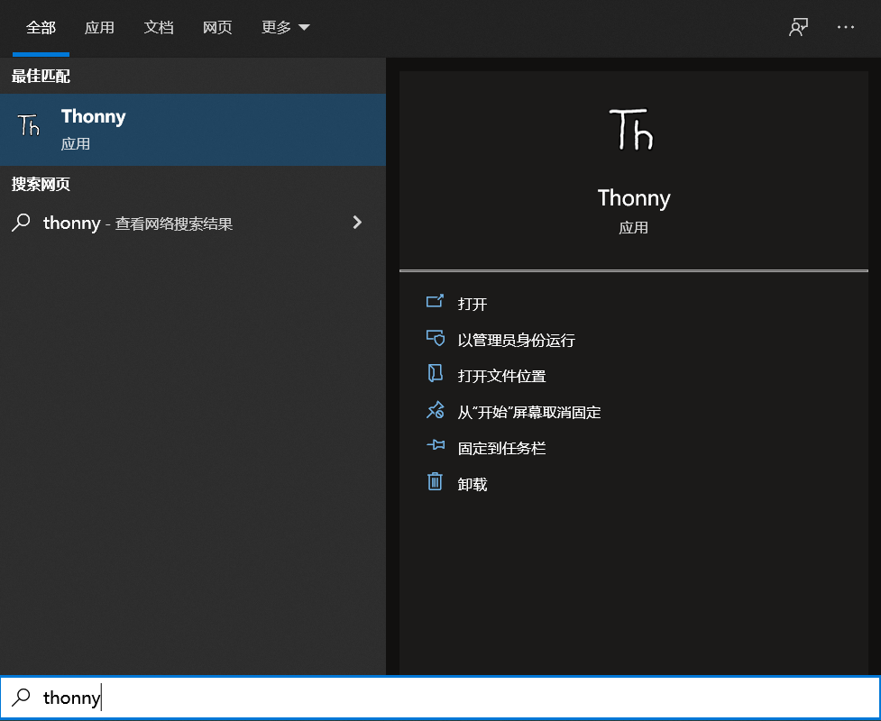
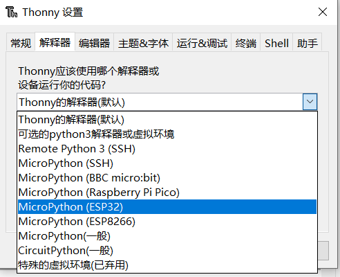
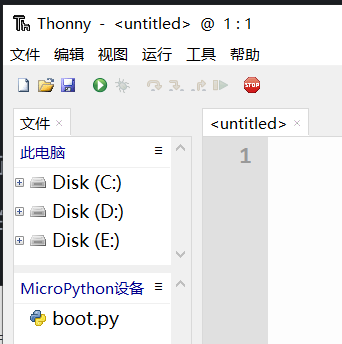
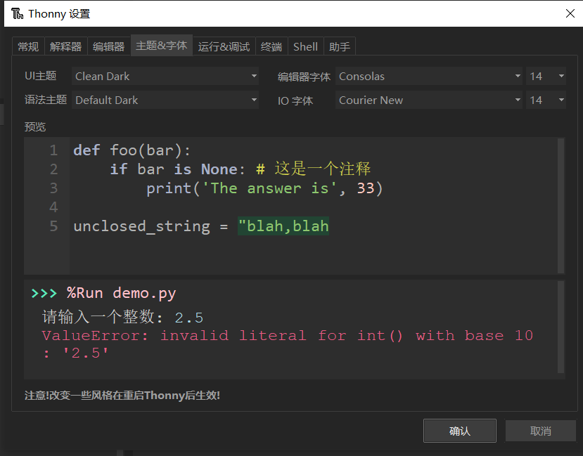

Micropython 运行环境搭建
Micropython运行环境依赖于Python，所以在使用前我们需要先安装Python，这里我们使用的IDE是Thonny。
安装Python环境
打开Python官网 。
对于Windows 系统来说，最便捷的安装包下载方法就是在官网首页点击如下图所示的图标进行下载。

其他操作系统或是其他发行版本则可以在 Downloads 选项栏中进行选择。
建议使用python 3.7以上的版本。
开始安装时一定要记得勾选Add Python 3.x to PATH，这样可以免除再手动添加进PATH。

按照安装提示逐步操作即可顺利完成安装 。
安装Thonny IDE
以Windows PowerShell的具体操作步骤为例。
其他系统或安装方法可参考Thonny官网上的说明。
右键Windows开始菜单即可看到Windows PowerShell ，单击打开。
我们在此处通过pip来安装Thonny IDE。
pip是 Python 包管理工具，首先要确认pip是否是最新版，直接使用以下命令升级pip：
pip install -U pip
使用以下命令安装Thonny：
pip install thonnyapp
如果未来有需要，则可以使用以下命令升级Thonny：
pip install -U thonnyapp
用Windows搜索即可快速找到Thonny，也可以在开始菜单栏里找到它。

连接开发板至电脑
将开发板通过USB数据线连接至电脑。
正确连接时开发板的电源指示灯会亮起。
我们需要知道开发板是否被电脑识别，并找出连接到了哪一个 COM 口（用于串口通信，下载程序等）。
首先在桌面找到“此电脑”,右键，选择“管理”，打开“设备管理器”，点开“端口（COM 和 LPT）”。
此时会在列表中新加入一个 COM 口（示例图中是 COM21）。

烧录MicroPython固件
Leaf-S3开发板默认出厂固件是MicroPython，如果您需要烧录固件，可以参考这里
配置Thonny IDE
打开Thonny，单击 运行，单击 选择解释器：
将解释器设置为 MicroPython(ESP32)：

选择开发板的COM口：
确认设置后，就在Shell中打开了MicroPython REPL。
REPL启动并输出信息即意味着MicroPython固件烧录成功，可以开始正常使用了。
单击 视图，勾选 文件，即可看到本地文件目录和开发板上的文件目录：

其他视图窗口也可按需设置使用。
在设置中可以选择个人喜欢的主题风格。
